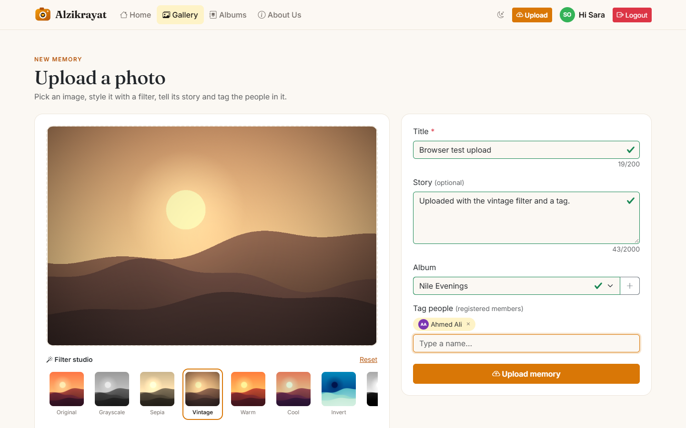
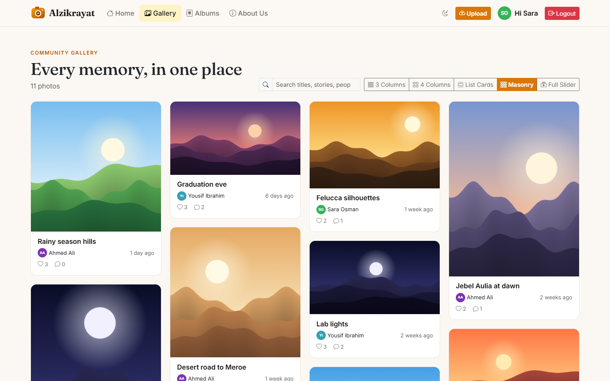
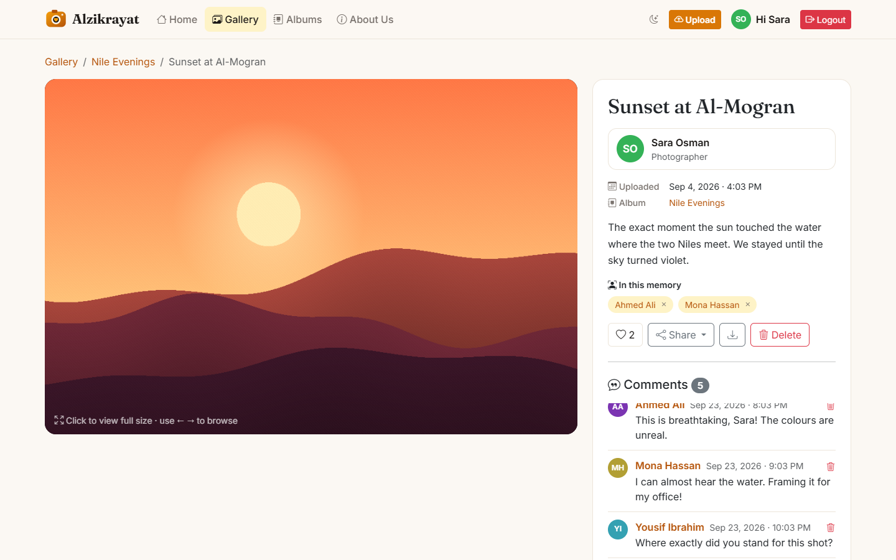
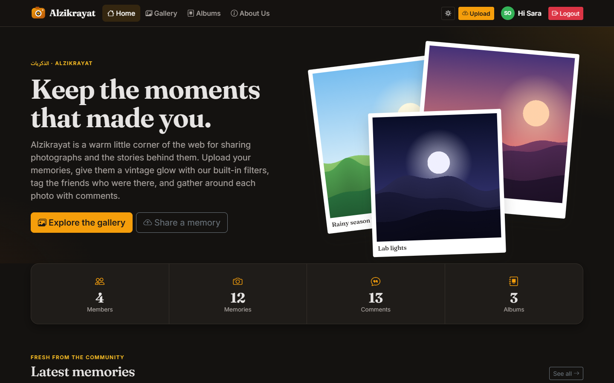

Alzikrayat, which means "memories" in Arabic, is a web application where registered users can upload their photos, write a short story about each one, group them into albums, tag friends who appear in them and leave comments. I chose the name because most of us keep important pictures scattered across phones and chat groups, and the stories behind them are usually lost after a while. The application gives each photo a proper page with its title, its author and the conversation around it.
The main aim of the project was to understand how a web application works underneath a framework. For that reason I did not use Laravel or any other backend library. The MVC structure, the router, the session and login logic, the input validator and all the SQL queries were written by hand in PHP 8, and the data is stored in MySQL. Bootstrap 5 is used on the front end to keep the layout responsive, and it is the only external library in the project.
The project combines two architectures that answer different questions. The three-tier model decides where each part runs:
the browser (presentation), the PHP server (application logic) and the MySQL server (data). MVC then decides how the code on the
PHP server is organised into models, views and controllers. All requests go through one entry point, public/index.php,
because the .htaccess file rewrites every URL that is not a real file to it. A useful side effect is that folders such as
config/ and models/ sit outside the public folder and cannot be opened from the browser.
index.php loads core/bootstrap.php, which registers the class autoloader, reads the configuration, sets the error handlers and starts the session with secure cookie settings.routes/web.php. The router turns a pattern such as /photo/{id:\d+} into the regular expression #^/photo/(?P<id>\d+)$#u using preg_replace_callback.PhotoController::show(25). A path with the wrong HTTP method returns 405, and an unknown path returns 404.The core/ folder holds the small framework itself: Router, the abstract Controller and Model
classes, View, Request and Response, Session, Auth, Validator and
ImageUploader. The validator accepts rules written as short strings, for example required|max:50|name.
alzikrayat/ ├── config/ config.php · database.php (PDO singleton) ├── core/ Router · Controller · Model · View │ Request · Response · Session · Auth │ Validator · ImageUploader · helpers ├── controllers/ HomeController AuthController │ PhotoController CommentController │ AlbumController UserController │ ErrorController ├── models/ User · Photo · Comment · Album │ PhotoTag · PhotoLike ├── routes/ web.php (explicit route table) ├── views/ layout/ auth/ home/ photos/ │ albums/ users/ errors/ ├── public/ index.php · .htaccess · css/ · js/ │ images/uploads/ (+ no-exec .htaccess) └── database/ schema.sql · seed.php
The database is defined in database/schema.sql and is normalised to third normal form. Each table has an
auto-increment integer key, or a composite key in the case of the two junction tables, and no data is repeated between tables.
For example, a comment stores only the user_id of its author, and the name is read from the users table with a join.
I used the InnoDB engine with the utf8mb4 character set so that Arabic names and emoji are saved correctly.
Foreign keys use ON DELETE CASCADE, so removing a user also removes their photos, and removing a photo removes its
comments, tags and likes. The only exception is the album link, which uses SET NULL so that deleting an album does not delete the photos inside it.
I added indexes that match the queries the application actually runs: a unique index on email for login,
(user_id, date_time) for a user's gallery and (photo_id, date_time) for listing comments in order.
The composite primary keys on photo_tags and photo_likes mean the database itself prevents a user from being tagged
or liking the same photo twice. The password column only ever holds the output of password_hash(), which is a salted bcrypt hash that cannot be reversed.
alz_last_login is set after each successful login and expires after 7 days. The login page reads it and shows "Last login from this computer was ...".public/images/uploads/ and their details in the photos table. If the database insert fails, the file is deleted so the disk and the database stay consistent.required, maxlength, type="email" and pattern.validation.js adds checks that HTML cannot express well, such as letters-only names, password strength, matching passwords and image type and size.Validator class and the models' validate() methods make the final decision. If a check fails, the form is shown again with the error messages and the previous input.htmlspecialchars() to stop XSS.
The upload page includes a small filter studio. The file public/js/filters.js reads the pixels of the image through the Canvas API
and changes them directly, without CSS filters or outside libraries. It contains thirteen filters in three groups:
Each filter has a small live preview. When the form is submitted, the edited image replaces the original file, so the server stores exactly what the user saw.
While uploading, the user can type a name and pick a registered member from a suggestion list. Tags are stored in photo_tags, and each profile has a "Tagged in" tab. The tagged person or the photo owner can remove a tag.
Albums can be browsed in any of the five gallery styles. Likes work without reloading the page, and the most liked photos appear on the home page. A share menu posts a photo link to X (Twitter), Facebook or WhatsApp, or copies it.




The finished application covers all the points in the project checklist. The router captures ids like /photo/12 without a framework,
the tables are normalised with cascading foreign keys, passwords are hashed with bcrypt, and the login system updates the toolbar and sets the
seven-day last-login cookie. Photos are saved on disk with their details in MySQL, only the owner can delete them, the gallery can switch between
display styles, comments appear immediately, and every form is validated in three layers. I tested the main flows in Chrome on desktop and mobile
screen sizes and on Apache through XAMPP.
Writing the framework myself was the most useful part of the project. After building a router, I could see that routing in large frameworks is mostly pattern matching, that middleware is simply a check that runs before the main action, and that an ORM is a convenient layer over prepared statements. If I continue the project, I would add smaller thumbnail images created on the server, paging for long comment threads, notifications when someone is tagged, and a REST API that a mobile app could use.